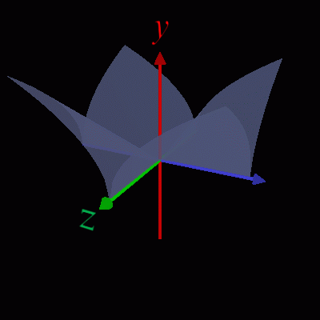
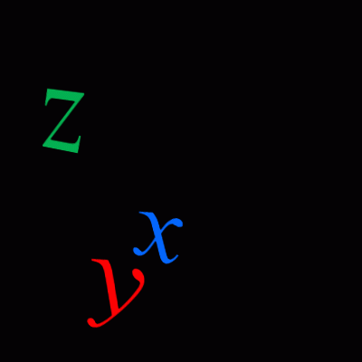

1点で偏微分可能でも全微分可能にならない例。
x軸、z軸上ではy=0 → (x,z)=(0,0) では ∂y/∂x=0, ∂y/∂z=0
しかし、軸以外の方向には微分不可。
半透明の3Dグラフを表示するプログラムです。

pip install opencv-python PyOpenGL glfw
python translucent3dgrpah.py
defineSurface 関数で y＝f(x,z) を指定します。
| 操作 | 機能 |
|---|---|
| 左ボタン押下＋ドラッグ | 3Dモデルの回転(yaw,pitch) |
| 矢印キー押下 | (同上) |
| rキー押下＋ホイール回転 | 3Dモデルの回転(roll) |
| 右ボタン押下＋ドラッグ | 3Dモデルの移動 |
| ホイール回転 | 3Dモデルの拡大・縮小 |
| Yキー押下 | y方向の倍率を上げる |
| yキー押下 | y方向の倍率を下げる |
| －キー押下 | y方向の倍率を－1倍する |
| ホイールボタン押下 | 慣性モードのトグル(on⇔off) |
| iキー押下 | (同上) |
| sキー押下 | スクリーンショット保存 |
| ウィンドウ閉じるボタン押下 | プログラム終了 |
おまけ：座標軸ラベルのみ表示すると･･･
python axis-label.py

1点で偏微分可能でも全微分可能にならない例。
x軸、z軸上ではy=0 → (x,z)=(0,0) では ∂y/∂x=0, ∂y/∂z=0
しかし、軸以外の方向には微分不可。

1点で偏微分可能でも全微分可能にならない例。
x軸、z軸上ではy=0 → (x,z)=(0,0) では ∂y/∂x=0, ∂y/∂z=0
しかし、軸以外の方向には微分不可。

x軸上では下に凸。常に0より大きい。
z軸上では上に凸。2点で0になる。

x軸上、z軸上で0になる。